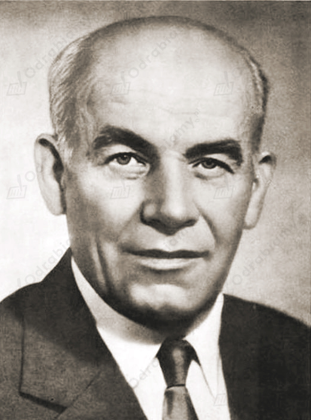
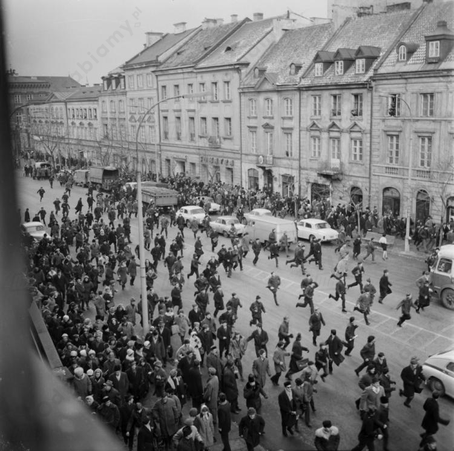

Mała stabilizacja to termin zaczerpnięty z książki Tadeusza Różewicza pt. "Świadkowie albo nasza mała stabilizacja" (1962 r.), stosowany na określenie etapu w dziejach PRL, kiedy rządy sprawował Władysław Gomułka, a więc od końca lat 50. do 1970 roku.
W II poł. lat 50. doszło do krótkotrwałej poprawy warunków życia polskiego społeczeństwa. Zwiększono produkcję dóbr konsumpcyjnych, budowano więcej mieszkań. Poprawiło się zaopatrzenie w niektóre artykuły żywnościowe, nastąpił realny wzrost wynagrodzeń, rozwijano produkcję dóbr - sprzętów gospodarstwa domowego, mebli, telewizorów i samochodów osobowych (m.in. Fiata 125p na włoskiej licencji). W społeczeństwie pojawiło się poczucie większego bezpieczeństwa i swobody, którym towarzyszyła poprawa warunków bytowych. Nastąpił rozwój kultury. To wówczas powstała tzw. polska szkoła filmowa (Andrzej Wajda, Andrzej Munk, Wojciech Jerzy Has). Jednak już w kwietniu 1957 r. partia i kierowany przez nią rząd zaczęły wycofywać się z przeprowadzanych reform. Gomułka zdecydowanie przystąpił do ideologicznej indoktrynacji kultury i walki z Kościołem Katolickim. Nadal wzrastał dystans standardu życia Polaków zarówno w stosunku do mocarstw zachodnich, jak i państw sąsiednich - Węgier, Czechosłowacji oraz NRD.
Czasy Władysława Gomułki (1956 r. - 1970 r., lata kiedy był I sekretarzem KC PZPR)
Sytuacja wewnętrzna Polski
Sytuacja międzynarodowa Polski
Mocne strony:
dojście Gomułki do władzy zapoczątkowało destalinizację: uwolniono prymasa Stefana Wyszyńskiego, więźniów politycznych, religia wróciła do szkół, zrezygnowano z przymuszania chłopów do kolektywizacji,
poprawiło się zaopatrzenie ludności w towary pierwszej potrzeby,
rozpoczęto produkcję samochodów marki Syrena i Fiat 125,
zorganizowanie obchodów Tysiąclecia Państwa Polskiego.
Słabe strony:
szybka rezygnacja Gomułki z dążeń reformatorskich,
wrogość komunistycznych władz wobec Kościoła (np. negatywna reakcja władzy na orędzie biskupów polskich skierowanego w 1965 r. do biskupów niemieckich),
rywalizacja z prymasem Stefanem Wyszyńskim o wpływy w społeczeństwie (np. obchody Tysiąclecia Chrztu Polski),
stłumienie buntów studenckich w Marcu 1968 r. – represje na uczelniach, czystka antysemicka, podziały społeczne,
wystąpienia robotnicze na Wybrzeżu w grudniu 1970 r. – demonstracje i starcia z milicją i ZOMO, śmierć 25 osób, ponad 1100 rannych,
niestabilna sytuacja gospodarcza,
niesprawiedliwość socjalistycznej gospodarki.
Mocne strony:
Adam Rapacki w 1957 r. zgłosił na forum ONZ plan strefy bezatomowej w Europie Środkowej (jednak nie został przyjęty),
z Polski wyjechali niektórzy radzieccy oficerowie z marszałkiem Rokossowskim na czele,
zawarcie korzystnej umowy handlowej z ZSRR – do tej pory Polska sprzedawała węgiel po cenie niższej od kosztów wydobycia,
Gomułka zdołał przekonać Chruszczowa, że zachowa przyjaźń z ZSRR i uratuje w Polsce socjalizm – rozmowy doprowadziły do zaniechania interwencji rosyjskiej w Polsce,
w 1970 r. Polska podpisała z RFN układ graniczny – RFN uznała granicę na Odrze Łużyckiej i Nysie Łużyckiej.
Słabe strony:
rzeczywiste uzależnienie od ZSRR;
popieranie interwencji w Czechosłowacji w 1968 roku.

Władysław Gomułka, źródło zdjęcia: Wikimedia Commons.
Przyczyny kampanii antysemickiej w Polsce pod koniec lat 60.:
zwycięstwo Izraela w wojnie sześciodniowej z popieranymi przez ZSRS krajami arabskimi,
zerwanie stosunków dyplomatycznych PRL z Izraelem,
w połowie 1967 r. prasa zaczęła atakować Izrael i rzekomo popierających go "syjonistów",
wzrost znaczenia frakcji "partyzantów" pod przewodnictwem Mieczysława Moczara, którzy zaczęli podsycać atmosferę nienawiści do Żydów,
głoszenie przez "partyzantów" poglądów, że w partii komunistycznej zauważalny jest nadmierny udział działaczy o pochodzeniu żydowskim i mających przeszłość w stalinowskim aparacie bezpieczeństwa,
postawa Władysława Gomułki, który zachęcał do emigracji mieszkających w Polsce Żydów, którym zarzucał większą lojalność wobec Izraela niż Polski i bycie "piątą kolumną",
przeprowadzenie czystki kadrowej w wojsku,
inwigilacja środowisk kulturalnych związanych z mniejszością żydowską,
w 1967 r. nastąpił wzrost nastrojów antysemickich w związku z wojną sześciodniową (1967 r.). Komunistyczne władze PRL, podobnie jak Związek Sowiecki - potępiły Izrael i zerwały z tym państwem stosunki dyplomatyczne. W Polsce rozpoczęto kampanię antysemicką, wymierzoną w osoby pochodzenia żydowskiego. Zmuszano je do opuszczenia kraju,
w 1968 r. w Czechosłowacji miała miejsce "praska wiosna", będąca próbą demokratyzacji tego państwa. Wzbudziła ona nadzieje na podobne zmiany w Polsce - hasło: Polska czeka na swojego Dubčeka,
w polskim społeczeństwie rosło niezadowolenie z ograniczeń wolności obywatelskich,
w styczniu 1968 r. władze zakazały wystawiania "Dziadów" w reżyserii Kazimierza Dejmka. Spektaklowi zarzucano antysowiecki wydźwięk.
Przebieg protestów studenckich w marcu 1968 r.:
4 III - minister szkolnictwa wyższego Henryk Jabłoński relegował z Uniwersytetu Warszawskiego Adama Michnika i Henryka Szlajfera, co wywołało bunt młodzieżowy. Koledzy i koleżanki zdecydowali, że trzeba ich bronić.
8 III - o godz. 12:00 studenci zwołali wiec studencki na dziedzińcu UW w obronie relegowanych kolegów. Uczestniczyło w nim 2 - 3 tysięcy zebranych. Studentka Irena Lasota przeczytała rezolucję przeciwko usunięciu studentów oraz petycję przeciwko zdjęciu ze sceny "Dziadów". Wiec został brutalnie rozbity przez tzw. aktyw robotniczy i oddziały ZOMO. Rozpoczęła się nagonka i bijatyka. Studenci przeżyli szok. Bito ich i pałowano, a następnie aresztowano.
9 III - w prasie ukazał się sfałszowany obraz wydarzeń dnia poprzedniego. Pisano, że brutalni, agresywni i bezwzględni byli studenci. Tego dnia na UW odbył się kolejny wiec i manifestacja. Studenci skandowali: "Prasa kłamie" i "Precz z komuną". Pochód został rozbity przez ZOMO.
Wkrótce protesty studenckie i młodzieżowe zaczęto organizować także na innych uczelniach i w innych polskich miastach - m.in. w Poznaniu, Krakowie, Lublinie, Gdańsku i Łodzi.
Skutki protestów studenckich w marcu 1968 r.:
Władysław Gomułka zdołał utrzymać władzę, jednak jego pozycja uległa znacznemu osłabieniu,
nastąpiły represje na uczelniach. Pracownicy naukowi, którzy popierali demonstrantów zostały zwolnione, ich miejsce zajęli tzw. "docenci marcowi",
w wyniku antysemickiej kampanii i przeprowadzonych czystek - z Polski emigrowało kilkanaście tysięcy osób żydowskiego pochodzenia. Osoby wyjeżdżające do Izraela były pozbawiane polskiego obywatelstwa. Działania te skompromitowały Polskę na forum międzynarodowym i przyczyniły się do utrwalenia opinii, że jest ona państwem antysemickim,
aktywny udział robotników w tłumieniu studenckich wieców spowodował podziały społeczne.

Uczestnicy wiecu na UW zaatakowani na Krakowskim Przedmieściu, źródło zdjęcia: www.dzieje.pl
bezpośrednią przyczyną wystąpień robotniczych na Wybrzeżu w 1970 r. była zapowiedź podwyżek cen, którą wprowadzono bez wiedzy polskiego społeczeństwa - 12 grudnia 1970 r., tuż przed świętami Bożego Narodzenia. Dla większości Polaków oznaczała ona bolesne wyrzeczenia. Zapowiedź podwyżek cen doprowadziła do tragicznych wydarzeń, nazwanych Grudniem 1970 r.
Przebieg wydarzeń z grudnia 1970 r.:
14 XII - wybuchł protest robotniczy w Stoczni Gdańskiej. Pracownicy zażądali cofnięcia podwyżek cen i udali się pod gmach Komitetu Wojewódzkiego PZPR, gdzie doszło do starć z milicją,
15 XII - protest rozszerzył się na pozostałe zakłady Trójmiasta i Elbląga. Ponownie zorganizowano pochód pod gmach Komitetu Wojewódzkiego PZPR. Wieczorem podpalono ten budynek. Doszło do starć z milicją i ZOMO,
16 XII - w Stoczni Gdańskiej proklamowano strajk okupacyjny, do którego przyłączały się kolejne zakłady pracy. Wieczorem wicepremier Stanisław Kociołek wezwał strajkujących do wznowienia pracy w kolejnym dniu, jednak nie zostało to uzgodnione z pozostałymi członkami partii,
17 XII - wczesnym rankiem w Gdyni wojsko otworzyło ogień do idących do pracy stoczniowców. Zginęło 18 osób,
demonstracje i starcia z milicją oraz ZOMO miały miejsce również w Szczecinie, Elblągu oraz Słupsku.
Konsekwencje wydarzeń z grudnia 1970 r.:
w wyniku Grudnia'70 na Wybrzeżu zginęło 45 osób, a 1165 zostało rannych,
uczestnicy protestów byli zwalniani z pracy i represjonowani,
nastąpiły zmiany w kierownictwie partii - Gomułka został odsunięty od władzy, a stanowisko I sekretarza KC PZPR objął Edward Gierek.